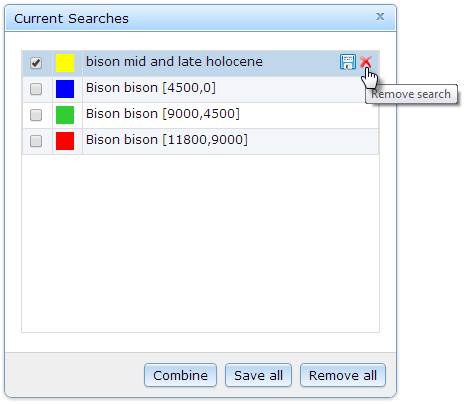

- Click the button to open the Current Searches list.
- To remove an individual search, mouse-over its row to display the additional action buttons, then click the button.

- Alternatively, clear the entire search list by click the Remove All button.
Created with the Personal Edition of HelpNDoc: Generate EPub eBooks with ease